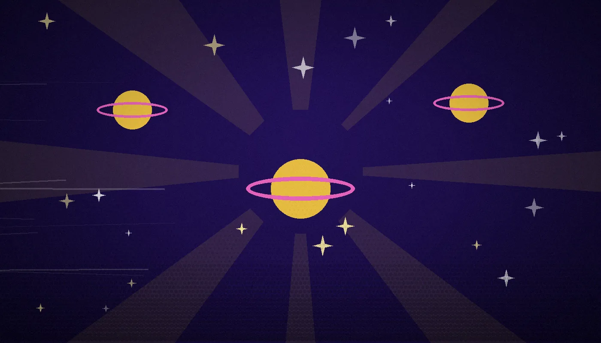
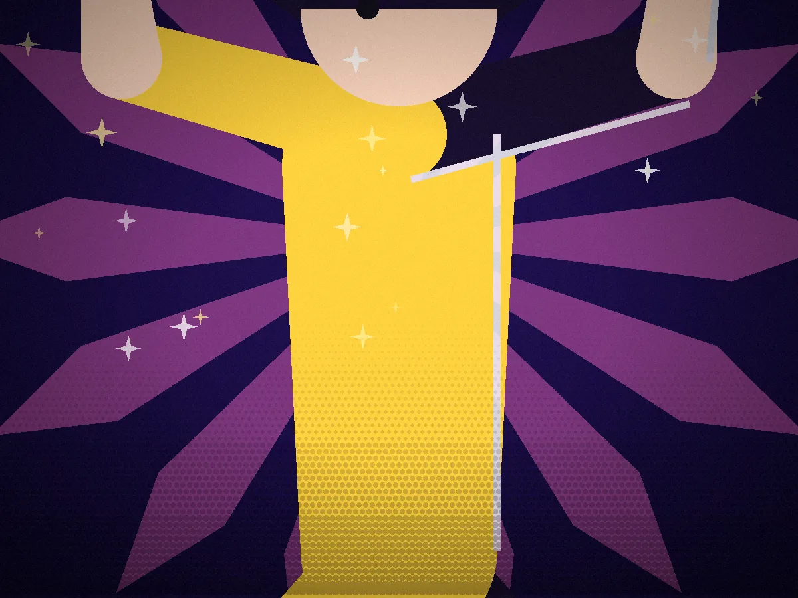
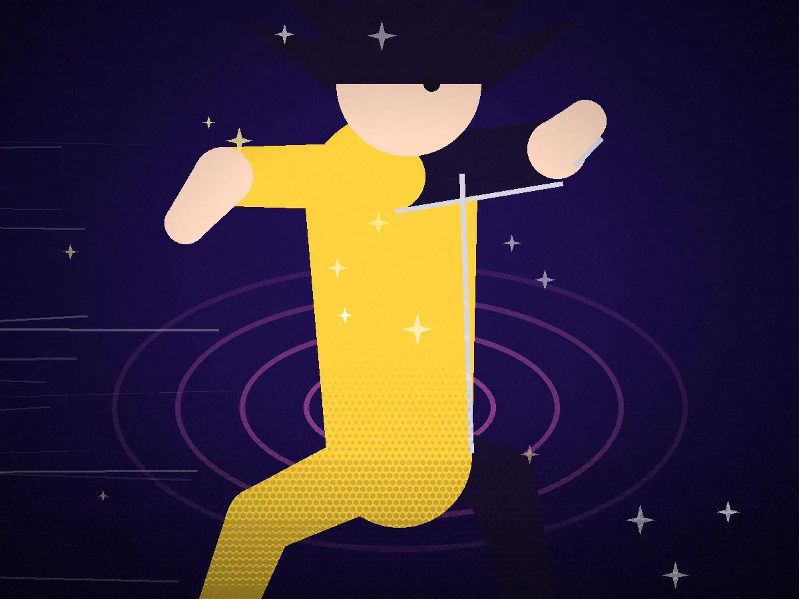

Scene one
Doors open on the belt.
The Express shudders through the asteroid field and the diner doors hiss wide. Booths fill in seconds. Order tickets start spinning off the wheel.

Scene two
Meteor shower. Full tilt.
Rocks ping the hull, the lights flicker pink, and the crew doesn't miss a pour. Every shake that lands steady during a shake adds double to the tab.

Scene three
Order nailed. Car erupts.
Perfect ticket, zero spills, shake delivered exactly as the customer's eyes lit up. The whole car goes neon and every regular bangs their mug on the counter.